On Now
Kaizoku Sentai Gokaiger
The Space Pirates Appear
A band of space pirates known as the Gokaiger arrive on Earth in pursuit of a legendary treasure tied to the 34 previous Sentai teams of the planet, who had all sacrificed their powers to stop the Zangyack Empire.
Recently Watched
-
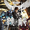
GARO and the Wailing Dragon
Kouga must now go to the Promise Land to get back the seventh fang of Gajari, the ultimate source of power, found inside the body of an evil dragon.
-
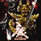
GARO Makai Senki
Episode 3: Wheels
Kouga and a young Makai Priest named Reo Fudō are assigned to deliver a new Makai tool, the Gōryū named Colt to the Western district Makai Priest. -
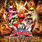
Kaizoku Sentai Gokaiger
Episode 10: Card Game
While playing a game of poker, with Captain Marvelous losing several hands while Joe gets a winning streak thanks to Luka holding back, the Gokai Galleon crew are alerted of a Zangyack fleet. -
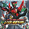
Let's Go Kamen Riders
The story starts with Kamen Rider OOO battling three Mole Imagin, which retreat into the body of a boy. The DenLiner suddenly appears, and Kotaro Nogami and Teddy pinpoint the timeline where the Mole Imagin trio went.
Recommendations
-
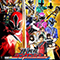
Samurai Sentai Shinkenger
For 17 generations, the war between the Shinkengers and Ayakashi continued, with slight reprieve given due to a massive sacrifice of the former leader to temporarily stop the Gedoshuu leader, Doukoku Chimatsuri.
-
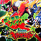
Zyuden Sentai Kyoryuger
Long ago, in the time of the dinosaurs, the Earth was invaded by an alien menace called Deboth, the leader of an invasion army. On the verge of extinction, some of the dinosaurs are transformed into Zyudenryu and seal Deboth and his forces in ice.
-
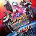
Movie War Mega Max
With the movie seperated into 5 parts, the story follows Kamen Rider OOO, Kamen Rider Fourze, and Kamen Rider W as their universes cross to defeat the Dai-Shocker.
-
 Kamen Rider W
Kamen Rider W
In the ecologically-minded city of Fuuto, where nearly everything is powered by windmills, the people live in harmony. However, the Sonozaki Family sell mysterious devices resembling USB flash drives called Gaia Memories to criminals and other interested parties who use them to become monsters called Dopants, committing crimes with the police force powerless to stop them.
Popular Shows
-
Kaizoku Sentai Gokaiger
A group of young pirates come from space to Earth to obtain the "Greatest Treasure in the Universe", which can only be acquired after obtaining the "Greater Powers" of the different 34 Super Sentai Teams.
-
Samurai Sentai Shinkenger
For 17 generations, the war between the Shinkengers and Ayakashi continued, with slight reprieve given due to a massive sacrifice of the former leader to temporarily stop the Gedoshuu leader, Doukoku Chimatsuri.
-
Kamen Rider W
In the ecologically-minded city of Fuuto, where nearly everything is powered by windmills, the people live in harmony. However, the Sonozaki Family sell mysterious devices resembling USB flash drives called Gaia Memories to criminals and other interested parties who use them to become monsters called Dopants, committing crimes with the police force powerless to stop them.
-
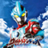
Ultraman Ginga
All of the Ultramen and monsters have been turned into figures known as Spark Dolls and became scattered throughout the universe. A young man named Hikaru Raidō finds an item called the Ginga Spark which not only allows him to become Ultraman Ginga, but also allows him to go Ultraive with the figures to change them to their rightful size and become one with them.
New Movies
-
GARO and the Wailing Dragon
Kouga must now go to the Promise Land to get back the seventh fang of Gajari, the ultimate source of power, found inside the body of an evil dragon.
-
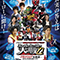
Superhero Taisen Z: Net Movies
To promote the movie, Toei released a series of Internet clips under the collective title Kamen Rider × Super Sentai × Space Sheriff: Super Hero Taisen Otsu: Heroo! Answers. The net movies also featured characters from Tsuburaya Productions and Marvel Comics.
-
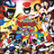
Kyoryuger: Gaburincho of Music
The Kyoryuger saves Mikoto Amano, nicknamed Meeko, from a horde of Zorima who invaded her concert venue. It turns out that Daigo once met Meeko in France. Before they can catch up, the ancient knight Deathryuger, aka D, appears and kidnaps her. D’s goal is to use the secret legendary battery #00, to take control of the mysterious Tobaspino. The Kyoryugers go after "D" to rescue Meeko and prevent him from gaining control over the legendary Zyudenryu.
-
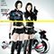
Travelers Dimension Police
Ai is a Dimensional Police officer who jumps into "Retro World" to hunt down the criminal organization "Doubt". There, she faces off against her former partner Yui, who now works for Doubt.
New Episodes
-
Ultraman Ginga
Episode 2: A Midsummer Night's Dream
While Alien Valky is dancing and teasing the Spark Dolls, Darker Gale approaches him and give Valky a new mission. -
Zyuden Sentai Kyoryuger
Episode 2: Gaburincho! Biting Combination
At the request of a girl named Rika Fukui and her friends, Daigo builds a T-Rex statue for an upcoming museum exhibit before he meets two of the people he met earlier at the Tiger Boy: Rika's uncle Nobuharu Udo and a rich girl named Amy Yuuzuki. However, a group of Zorima under the Debo Monster Debo Peshango appear with Daigo transforming into Kyoryu Red to fight them before going after Debo Peshango. -
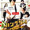
Hungry!
Episode 1
Eisuke Yamate is a member of rock group "Rock Head," which he formed with friends 15 years ago. His mother is a chef who specializes in French cuisine. Eisuke was also born with a natural talent for cooking and until the age of 13, dreamed of becoming a French chef. -
Ouran Host Club
Episode 5: The Twins Fight!
Hikaru and Kaoru beg to be allowed to visit Haruhi's home, but she refuses. Haruhi comments about the differences between Hikaru and Kaoru, which triggers a fight between the inseparable siblings, even making them dye their hair different colors (blue and pink) in order to be told apart.